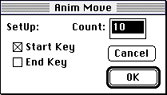

Instead of painting each frame individually, you can have 3DO Animator
flip the frames for you. Flipping frames makes it easy to create
animations that involve simple movement of an object (a selection or
brush). Essentially, they flip automatically while you paint.
Troubleshooting advice
In this release, there have been some problems with this feature. If
things don't work quite right, make sure that you are working in 256
colors and move the brush completely inside the document before starting
to flip frames.
How to paint onto flipping frames
To create an animation by painting onto flipping frames, follow these
steps:
Create a number of frames, or, if you want to overwrite an existing
animation, choose Clear > All Frames from the Anim menu.
Note: When you're working with animation, always use one of the
Clear options from the Anim menu rather than choosing Clear from the Edit
menu (or double-clicking the Eraser tool) to clear the screen. The Edit
menu command will only apply to the currently visible frame.
Press Command - 1 to make sure you're on Frame 1 of the animation.
Select the large round brush, as described in steps 1 through 3 of the
previous section (page ).
Press and hold down the backquote (`) key in the upper-left corner of
the keypad next to the number 1 and drag the brush across the screen from
left to right.
As you paint, 3DO Animator flips the frames, so you place only one dot
on each frame of the animation. The frame counter scroll bar changes to
indicate the frame you're on.
Stop when you loop back to frame 1, where you see the first dot
again.
To view the animation, press Command - 5.
Command - 5 is the keyboard equivalent of clicking the Play
Continuously button on the control panel.
Press the Spacebar (or click the mouse button) to stop the animation.
The Anim Move command gives you a simple way to describe horizontal and/or
vertical movements of the selections you create. You specify a start frame
and an end frame, and 3DO Animator performs the movement.
How to use Anim Move to create an animation
Choose Clear > All Frames to clear the previous animation
sequence.
Choose Set # of Frames, change the count to 20, and click OK.
If you decrease the number of frames in an animation, the frame
counter automatically reverts to Frame 1. If you increase the number, it
does not, and you have to set it by hand.
Press Command - 1 to set the Frame Counter to frame 1.
Start by choosing an interesting foreground; a solid color, a
gradient, or a pattern.
Click the Ellipse tool and draw a small circle in the middle of the
screen.
From the Anim menu, select Anim Selection, then Anim Move from the
submenu.

Figure 1: Anim Move dialog.
The Anim Move dialog (see Figure) appears and the circle is
automatically selected. The dialog displays the number of frames you set
for the animation and the Start Key box is checked by default.
Drag the circle to the upper-left corner of the screen and release the
mouse button. Don't choose OK yet!
This sets a position from which the animation will start.
Click the End Key box in the Anim Move dialog.
Drag the circle to the lower-right corner of the screen and release
the mouse button. This sets the position at which the animation will
end.
Choose OK.
3DO Animator draws the movement you described over 20 frames and
leaves the circle selected at its ending position (on frame 20).
Click the mouse button to deselect the circle; then click the Play
once button (or press Command - 4) to see the animation.
Here's what happened: When you set the beginning and end points for the
object. 3DO Animator marked and remembered those two positions. The
program then drew the movement of the object as a straight line between
the two points.